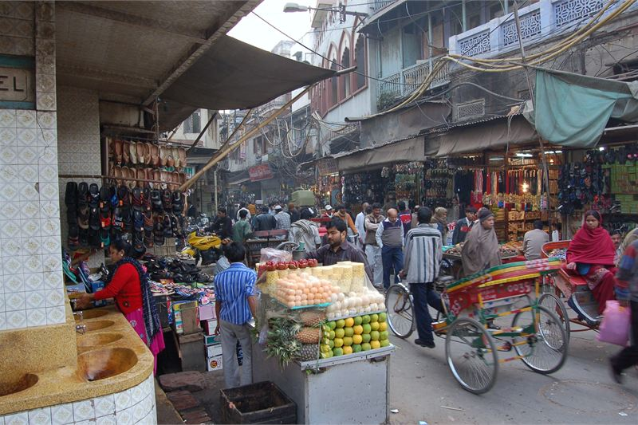

How these hotels were researched
▼- Rates: compared across more than one booking platform on the same day, quoted as a range with the month checked. Not a quote, and they move.
- Guest reviews in bulk: looking for complaints that repeat across many months, not single bad nights.
- Location: checked against a map, measured to the thing you actually came for.
- Real cost of entry: taxes, compulsory meal plans, transfers, and what is not included in the headline rate.
- What I could not confirm is said plainly in the text rather than filled in.
Delhi is really several cities that happen to share an airport, and picking the wrong one costs you hours. The distance from Connaught Place to Gurugram is about 30 km. In the Friday evening peak that can take ninety minutes. Nobody tells you this when you are looking at room photographs.
So the useful question is not which hotel is best. It is which part of Delhi you need to be in, and whether you will be using the Metro or a car.
The Metro genuinely works here, which separates Delhi from most Indian cities. If your hotel is a short walk from a station on the Yellow or Blue line, you can skip the traffic entirely. That is worth more than a swimming pool.
Lutyens and Connaught Place

The Imperial on Janpath is the landmark here. It opened in 1936, sits in its own gardens off one of the busiest roads in the city, and has a genuinely good collection of colonial-era prints and paintings hung along the corridors. The corridor is free to walk if you are having tea, which is a reasonable way to see it without staying.
Location is the argument. You are a walk from Connaught Place, a short ride from India Gate and the museums, and close to Rajiv Chowk, which is the interchange the whole Metro network hangs off. From there Old Delhi is about fifteen minutes underground, which by road would be forty.
Indicative rates run from around Rs 18,000. That is not cheap, and the honest point is that central Delhi has a lot of competent business hotels in the Rs 6,000 to Rs 10,000 band with the same Metro access. You are paying the difference for the building and the garden, not for the position.
The drawback is Janpath itself. It is loud, the approach is congested, and the hotel is a calm island you have to cross a busy road to reach.
| Indicative rate | The Imperial from around Rs 18,000; solid mid-range central options from Rs 6,000 |
|---|---|
| Rates checked | July 2026 |
| Metro | Rajiv Chowk, the main interchange |
| To the airport | Airport Express from New Delhi station, roughly 20 minutes |
| Best for | Sightseeing, first visits, anyone using the Metro |
In its favour
- Best Metro access in the city, which beats any amount of taxi budget
- Walking distance to Connaught Place and a short hop to the museums
- The Airport Express from New Delhi station makes departures painless
Worth knowing first
- The Imperial charges a heritage premium for a location you can get for a third of the price
- Janpath and Connaught Place are noisy and the traffic approach is slow
Old Delhi and the haveli stays

A handful of restored havelis now operate as small hotels inside the old city, and they are the most interesting places to sleep in Delhi. Courtyard buildings, a dozen rooms or fewer, sitting in lanes that a car cannot enter.
Waking up inside Chandni Chowk is a completely different trip from waking up in Lutyens. Jama Masjid and the Red Fort are a walk. The food, which is the main reason to be in Old Delhi, is on your doorstep rather than a forty-minute drive away.
Be clear about the trade. The lanes are narrow, crowded and loud from early morning. You will walk the final stretch with your luggage. There is very little quiet at any hour. Rooms in old buildings are small and vary a lot. If anyone in your party finds crowds difficult, this is the wrong choice and it will not improve over three days.
| Indicative rate | Roughly Rs 6,000 to Rs 20,000 for restored haveli rooms |
|---|---|
| Rates checked | July 2026 |
| Access | Final approach on foot through the lanes |
| Metro | Chandni Chowk station on the Yellow line |
| Best for | Second visits, food-led trips, travellers who want the old city |
In its favour
- The only way to actually experience Old Delhi rather than visit it
- Jama Masjid, the Red Fort and the food streets on foot
- Small properties, so service is personal in a way the big hotels are not
Worth knowing first
- Noise starts early and does not really stop
- Luggage over the last few hundred metres, on foot, through crowds
- Rooms in heritage buildings are small and inconsistent
Aerocity, for one specific situation
This is the one to skip unless it fits exactly one case. Aerocity is a cluster of business hotels next to the airport. There is nothing to see, nothing to walk to, and staying there means you have flown to Delhi without going to Delhi.
The exception, and it is a real one, is an early departure or a very late arrival. Delhi traffic can turn a 5am flight into a 2:30am start from the centre. A night in Aerocity removes that risk and the hotels are ordinary but perfectly comfortable, from around Rs 5,000.
It is also on the Airport Express, so you can get to Connaught Place in about twenty minutes if you want a day in the city. That makes it defensible for a single transit night. It does not make it a base.
| Indicative rate | From around Rs 5,000 |
|---|---|
| Rates checked | July 2026 |
| To the terminal | Minutes, with shuttles |
| To Connaught Place | About 20 minutes on the Airport Express |
| Best for | Transit nights only |
Choosing quickly
First time in Delhi and seeing the sights: stay central, near a Metro station, and do not overpay for heritage unless you want it for its own sake. Coming back and want the city that predates the British: a haveli in the old town. Flying out at dawn: one night at Aerocity and no guilt about it.
Practical notes
- Check the nearest Metro station before you book, and check which line. Yellow and Blue cover most of what visitors want.
- Delhi air quality is genuinely poor from roughly late October to January. If anyone in your party has asthma, plan around it and consider a room with good air filtration.
- Summer from April to June is extremely hot. Rates drop for a reason.
- Prepaid taxi counters at the airport and app cabs are both reliable. Avoid accepting a ride from anyone approaching you inside the terminal.
Agra is a three-hour drive or a two-hour train from Delhi and most people combine them. The Agra guide covers whether a Taj-facing room is worth the premium.